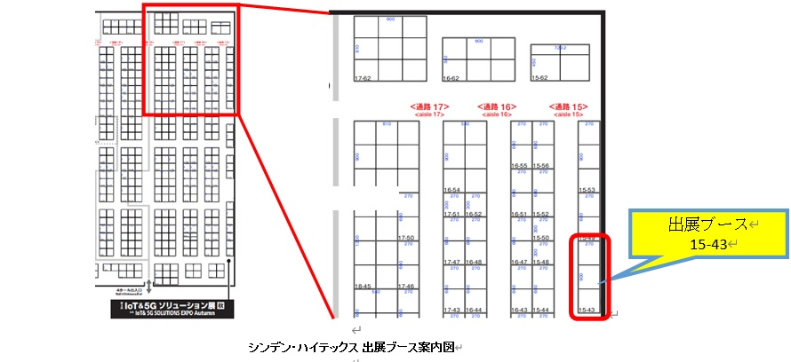

Date of Issued :2022/10/13
Subject : 第13回 Japan IT Week秋 出展のご案内 (IoT&5Gソリューション 展【秋】
Message Contents :
この度弊社は2022年10月26日（水）から28日（金）まで幕張メッセで開催されます「第13回Japan IT Week 秋」に出展する運びとなりましたので、ご案内申し上げます。
当社ブースでは最新のAMD EPYC、RYZEN搭載GIGABYTE社サーバー、GIGAIPC社 、Xilinx社Alveo、Telit社の5G/LTE、及びWiFiモジュール、MultiTech社のLoRaなどをご紹介、ご覧いただけるようになっております。
第13回 IoT&5Gソリューション 展【秋】
名称：第13回 Japan IT Week秋 / IoT&5Gソリューション 展【秋】
会期：10月26日(水)から10月28日(金) まで10:00～18:00（最終日のみ17:00終了）
会場、ブース：幕張メッセ、第4ホール、15-43ブース
IT Week 公式Website

AMD RADEON PRO W6400はエントリー向けGPUカード製品です。最新のGPUアーキテクチャーの採用、以下の特徴があります。